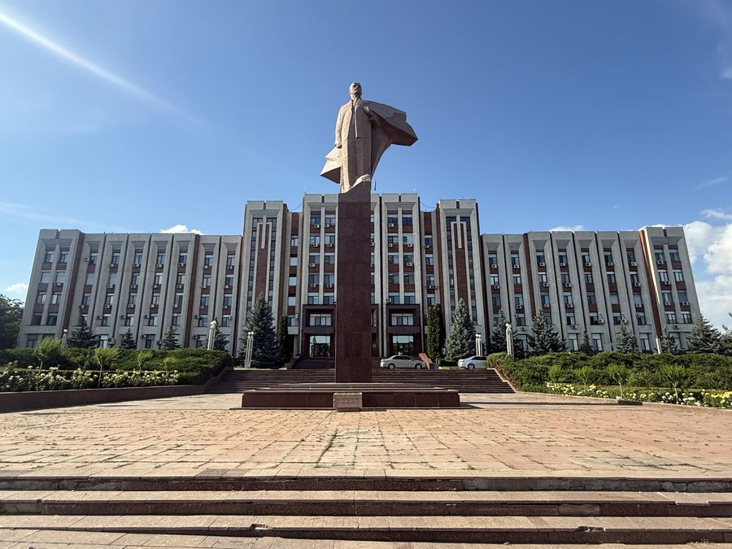
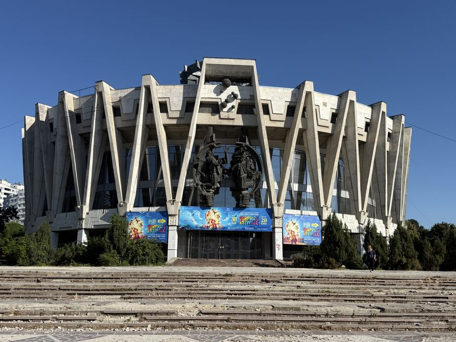
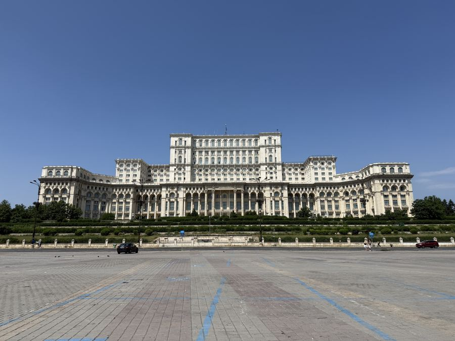
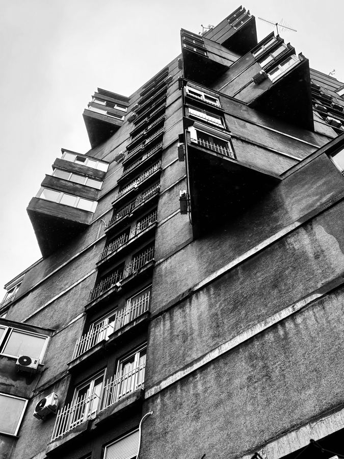
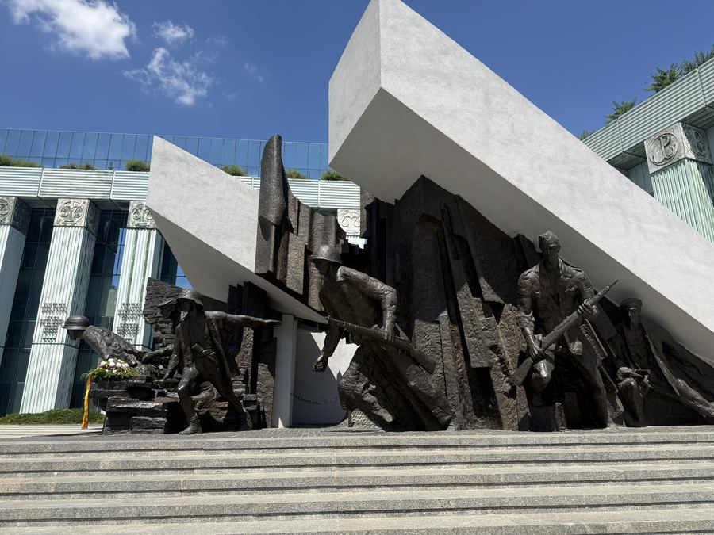
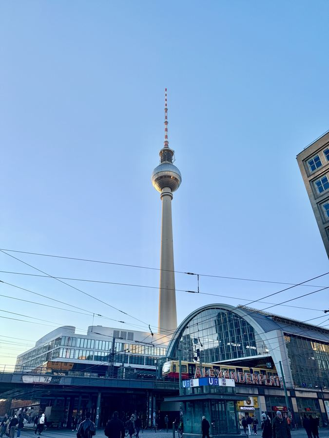

The rest of this site is organised by building. This section is organised by the trip: how the place was reached, what it felt like to stand there, and the practical detail you would want if you were going yourself.
Each chapter pairs a first-hand account with a guide reflecting conditions at the time of the visit — transport, borders, money, and what you are and are not allowed to photograph. Everything is written in both English and Traditional Chinese, because almost none of this material exists in Chinese at all.
網站的其他部分是按建築整理的；這個專區則是按旅程整理：怎麼抵達、站在那裡是什麼感覺，以及如果你要自己去，會需要知道的實際細節。
每一章都包含第一手紀錄，以及一份反映當時狀況的實用指南——交通、邊境、貨幣，還有哪些東西可以拍、哪些不能拍。 全部中英雙語，因為這類材料的中文版本幾乎不存在。

June 2026
Tiraspol & Bender

June 2026
Moldova

June 2026
Romania

March 2026
Serbia

May 2026
Poland

December 2025
Germany